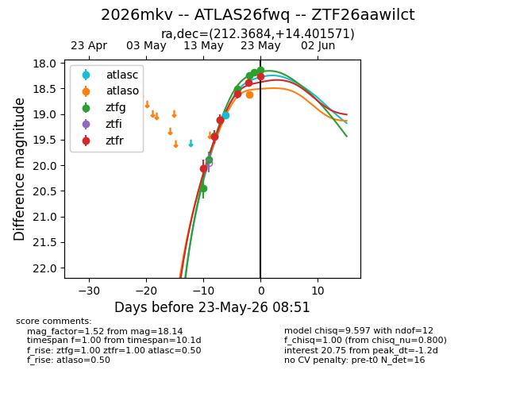
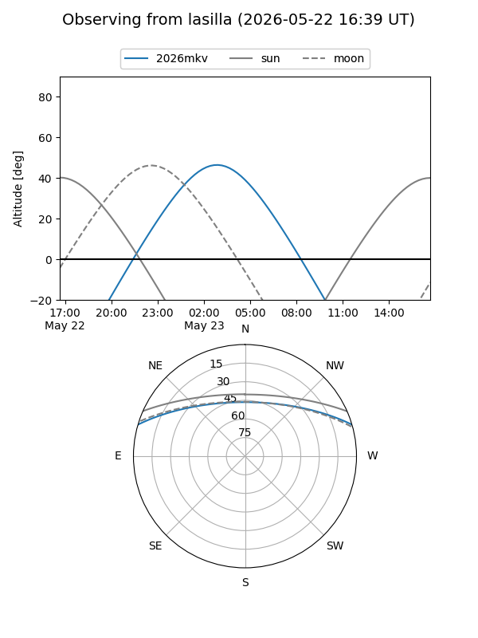
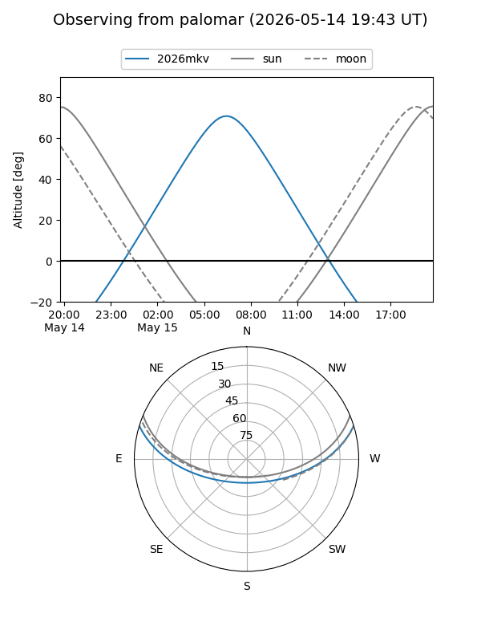
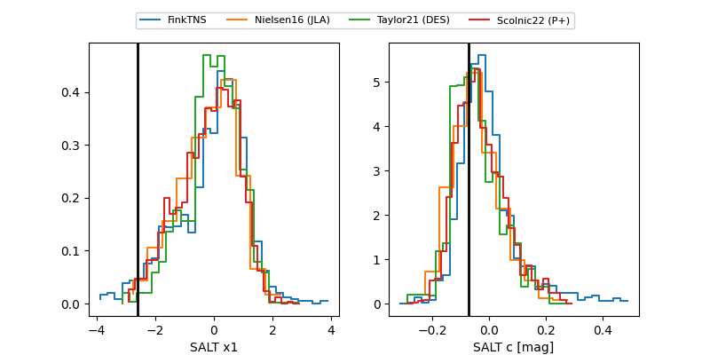

2026mkv
Target 2026mkv at 2026-05-23 08:52
Aliases and brokers:
lsst-FINK: link
lsst-Lasair: link
lsst-ALeRCE: link
ztf-FINK: link
ztf-Lasair: link
ztf-ALeRCE: link
TNS: link
YSE: link
alt names
ZTF26aawilct (ztf,fink_ztf)
2026mkv (tns,yse)
ATLAS26fwq (atlas)
Coordinates:
equatorial (ra, dec) = 212.3684,+14.40157
equatorial (HMS+DMS) = 14:09:28.42,+14:24:05.66
galactic (l, b) = (1.8551,+67.81098)
Flags:
Photometry:
last atlasc=19.02, atlaso=18.61, ztfg=18.14, ztfr=18.27
1 atlasc, 1 atlaso, 8 ztfg, 6 ztfr detections
Lightcurve

Visibility


Additional plots
